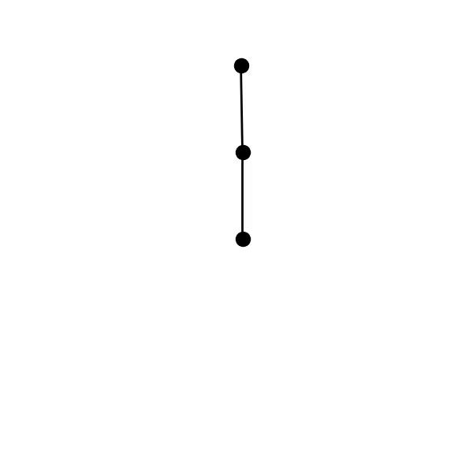
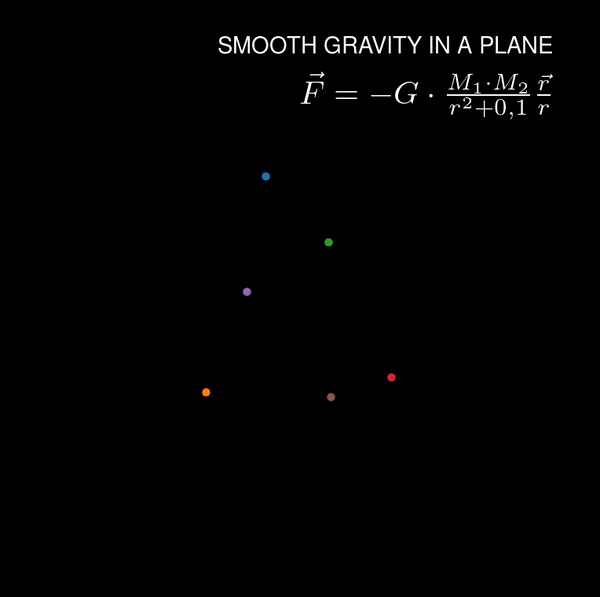

What is this?
A collection of tutorials and examples that aim to showcase and explain the animation capabilites one has using Python. It is a lot of fun to create scientific visualizations!
How do I get started?
If you don't know what a terminal/console is you will sadly have to do some basic studies first. But the internet is your friend. There are many resources which can guide you through the process if you want to learn programming with Python.
Thank you, Fabian Heisinger. You showed me that there is prolonged interest in nice scientific visulizations.